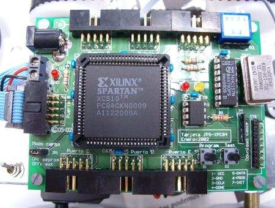
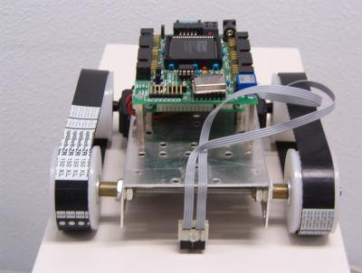
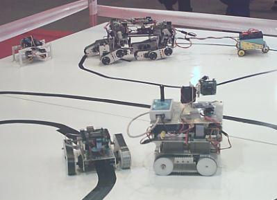

HISTORIA
El microbot Robot de Docencia fue creado como resultado de una práctica especial
de la asignatura de Arquitectura de Computadores. En esta asignatura se plantea como proyecto
final el diseño de un sencillo microprocesador en VHDL. Un paso más allá sobre la práctica
era la implementación del microcontrolador en una FPGA y utilizarlo para una aplicación real.
EL MICROPROCESADOR
El diseño del microprocesador se basa en unas especificaciones dadas en las prácticas de
la asignatura de Arquitectura de Computadores. A continuación se muestra su arquitectura:
 Arquitectura del microprocesador básico
Arquitectura del microprocesador básico
El microprocesador se complementa además con una memoria ROM también
diseñada en VHDL y que debe contener el programa a ejecutar.
LA PLACA DE DESARROLLO
Para la implementación real del microprocesador se empleó la placa de desarrollo
JPS-XPC84 desarrollada en la EPS para las prácticas de Circuitos Digitales.

Placa de desarrollo JPS-XPC84
LA ESTRUCURA MECÁNICA
El Robot de Docencia se montó a partir de la estructura base de un Robot Clónico
desarrollada por
Andrés Prieto-Moreno Torres al que incorporamos la placa de desarrollo.

Robot de Docencia
APLICACIÓN: ROBOT-RASTREADOR
La aplicación más sencilla de desarrollar es la de robot rastreador,
ya que solo requiere el montaje de una par de sensores CNY70 adicionales
a la estructura del robot clónico. Además, el programa es bastante sencillo, dadas las limitaciones de memoria y set de instrucciones disponible.
Para el manejo de los sensores y motores, fue necesario añadir al
diseño del microprocesador, un conjunto de registros de entrada/salida,
que se mapearon en ciertas direcciones de memoria.
 Siguiendo un circuito (IFEMA 2003)
Siguiendo un circuito (IFEMA 2003)

Al lado del resto de robots (IFEMA 2003)
Documentos adicionales